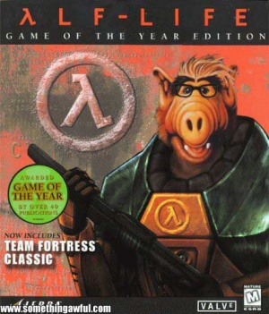

Anexo:Hechos sobre Gordon Freeman
 De: La Frikipedia, la enciclopedia extremadamente seria.
De: La Frikipedia, la enciclopedia extremadamente seria.
- La palanca de Gordon Freeman es sagrada. Si la tocas, sufrirás el síndrome de fragmentación craneana palanquística.
 Lo que pasa por estar tanto tiempo expuesto a la radiación.
- Gordon Freeman nació sabiendo.
- Dicen que Gordon Freeman es Einstein con escopeta y palanca. ERROR, Gordon es más inteligente que Einstein.
- Un día, Gordon Freeman tiró su palanca a un vacío, y ésta volvió a su mano.
- La madre de Gordon es su palanca, la cual creó.
- Sea el panorama que sea, Gordon Freeman no frunce el ceño ni sonríe, no le importa nada.
- Gordon Freeman es el único capaz de pegar 20392039209 palancazos por segundo.
- Todos los que le dijeron "Gordo Hombrelibre" a Gordon Freeman, sufrieron un palancazo. Por eso G-Man no lo espía muy seguido.
- El IQ de Gordon Freeman es 23029302930923238467589732038492384.
- Si Gordon Freeman quiere, Steven Hawking es capaz de levantarse de su silla para arrodillársele.
- Cuando Gordon Freeman tiene que forzar una puerta para entrar usa una llave(la palanca es solo para forzar cabezas).
- Los que no son amigos de Gordon sufren un palancazo.
- Gordon Freeman tuvo relaciones con la tía buena de HL2 con sólo mirarle abajo.
- Gordon Freeman usa su palanca para tener sexo.
- Todavía no termina la apuesta entre Gordon Freeman y este chaval sobre quién puede contenerse y estar más tiempo sin decir nada.
- Alguien usó la palanca de Gordon Freeman para rascarse la espalda, pero mejor que Gordon le eche una mano...
- Gordon tiene una empleado del mes, cuando apenas si comienza su primer día de trabajo.
- Gordon predice el futuro a base de ecuaciones que escribe en su espalda mientras hace bunny jumping.
- Gordon Freeman duerme con los anteojos puestos.
- Gordon Freeman hizo un análisis crítico de Ran Ran Ru.
- Gordon Freeman abusó sexualmente de la niña que aparece en el vídeo de "La Llamada", por eso no es la misma...
- La palanca de Gordon Freeman sirve para volar.
- Gordon Freeman golpea con su palanca, y su palanca golpea con otro Gordon Freeman y así sucesivamente.
- A Gordon Freeman le hacen caso sin que diga nada.
- Gordon Freeman puede ser de dos bandos en GTA 3 San Andreas. Y llevar 50 acompañantes en un auto para dos.
- En GTA 3, Gordon Freeman puede reventar un tanque a golpes, porque hacerlo con el bat es demasiado fácil.
- Gordon Freeman jugó a Half-Life.
- Gordon Freeman jugó a que era Adrian Shephard, en una pesadilla de Barney Calhoun.
- Gordon Freeman puede pulsar un botón sin usar las manos.
- Gordon Freeman es capaz de subir una escalera corriendo, de espalda, más fusil que se levanta con las dos manos
- Gordon Freeman se baña con el traje de protección puesto.
- Gordon Freeman puede guardar 16 armas o más en su pequeño bolsillo.
- La totalidad de todas las armas de Gordon Freeman pesan alrededor de 1000kg.
- El traje de Gordon Freeman lleva baño portátil.
- Gordon Freeman no se puede ver a sí mismo en un espejo ni observar sus pies porque su imagen tiene miedo de ser vista por él.
- La palanaca de Gordon Freeman es roja debido a que la usa para matar.
- Gordon Freeman no respeta a nadie. Lo más cercano que puede hacer es dejarte la mitad del cerebro.
- Algún vigoroso pensador incluyó el palíndromo nogordodrogon, hoy conocido como Steven Hawking, quien quedó tetraplégico. Sobrevivió a razón de que Gordon le pegó con la palanca al revés.
- Gordon Freeman ingresó a la historieta de este vikingo. Como resultado, el vikingo es enano y la historieta, ya no la misma...
- Gordon Freeman puede subir una escalera de mano con sólo mirar hacia arriba y avanzar.
- Aún con el peso del traje, Gordon Freeman ganó el Concurso de Correr de Marines Asesinos a un negro africano.
- Gordon Freeman pasó ENTERO Half-Life en medio minuto con sus expansiones y secuelas al mismo tiempo sin windowed.
- Uno de los pasatiempos favoritos de Gordon, es ver sufrir a los demás.
- Otro pasatiempo de Gordon Freeman consiste en abrirle la cabeza a los guardas de un palancazo (aunque tengan casco) para robarles sus pistolitas.
- Para pedir algo prestado, Gordon Freeman necesita una palanca de acero y alguien que esté de espaldas...
- Gordon Freeman nació con el traje.
- Gordon Freeman desvió el avión para que choque con las Torres Gemelas.
- Arrojó su palanca tan lejos de manera que paró a la cabeza del piloto. Y el copiloto.
- Gordon Freeman descubrió el código del Santo Grial. Lástima que jamás haya hablado...
- La palanca de Gordon es roja por la sangre de sus enemigos.
- El que inventó un videojuego llamado "Codename Gordon" recibió un palancazo. Gordon Freeman no es asesino a sueldo.
- Un tío en Dragon Ball podia romper 64 cerámicas de un golpe. Gordon Freeman rompió 64 zombis de un palancazo.
- La vida de Gordon Freeman es una de las pocas que tiene sentido, el resto no.
- Un día Gordon se detuvo a pensar porqué daba de palancazos a todo el mundo, mientras mataba a su amigo.
- La razón por la que se escucha un ruido cuando Gordo se acerca a la radiación, es porque se comió un Contador Geiger el año pasado.
- Gordon Freeman tardó medio minuto en escapar de Black Mesa, matando a todos los de la instalación.
- A Gordon Freeman le llevaron 2 segundos derrotar a Nihilant.
- Gordon Freeman se hace planteos existenciales mientras pega palancazos, esquiva balas, mata, etc.
- Gordon Freeman tiene un súper estómago cybertrónico propio de su traje.
- El mejor escondite de Gordon Freeman es el interior de su propio traje.
- Freeman sabe de que se tratará Half-Life 2:Episodio Tres.
- La multitarea de Gordon consiste en leer el libro de Física Nuclear III mientras pega palancazos, salta y corre.
- El "Traje" de Gordon no es simplemente una vestimenta. Es parte de él.
- Un fulano pudo reirse de Gordon. Pudo.
- Desde que Gordon Freeman llegó a Black Mesa, no dijo ni una puta palabra. Salvó a la humanidad. Saquen sus conclusiones.
- Gordon Freeman sabe porqué G-Man tiene un maletín pegado a la mano. Y sabe qué tiene dentro.
- Gordon Freeman sabe quien es el responsable del incidente de Black Mesa.
- Gordon Freeman conoce el principio y el fin del Universo y el Todo.
- Gordon Freeman pegó un palancazo a un violín. Inventó el sonido
- Gordon Freeman rozó su palanca y le encendió fuego. Generó un gran incendio en Chicago.
- Durante las partidas de Tenis, al primer tiro de Gordon Freeman la puntuación es 15-0 (15 muertos por palancazos).
- La apertura del portal hacia Xen sucedió cuando Bender intentó doblar la palanca de Gordon Freeman.
- Gordon Freeman es un palancazo de G-Man, quiere decir que G-Man es una especie de Gordon Freeman. G-Man es un palancazo de Gordon Freeman. ¡¡¡¡¡¡¿¿¿¿¿Quiere decir, entonces, que Gordon Freeman es una especie de Gordon Freeman????????!!!!!!!!!!!
- El alma de Gordon Freeman reside en su palanca (Ah, con razón no puede separarse de ésta).
- Gordon Freeman puede matar a G-Man. Pero lo deja vivir porque le parece simpático.
- Gordon Freeman es hermano gemelo de Dr.House y compiten a muerte sobre quién se queda con el premio nobel de la ciencia...
- Gordon Freeman hizo una carrera en picada con el Dr.House, desde entonces el mencionado doctor quedó cojo.
- El bastón del doctor House fué bendecido con agua bendita, desde entonces, trata de igualar los poderes de la palanca de Gordon.
- Gordon deja su palanca en un vaso de agua antes de dormir.
- Cuando alguien intenta profanar a Gordon mientras duerme, la palanca sale del vaso por sí sola y mata al profanador.
- Cuando Gordon Freeman tiene sed, come sal.
- Cuando Gordon Freeman tiene sed, toma lava.
- Gordon Freeman puede tomar limonada con sal.
- Gordon Freeman usa su palanca para revolver su jugo de frutas.
- Gordon Freeman inventó a Clint Eastwood con un pelo de su barba mientras llevaba sombrero. Ese pelo en sus primeros pasos, protagonizó el documental denominado "Douglas".
- Gordon Freeman le enseñó reglas físicas a Einstein.
- Luego fue a por Stephen Hawking. Pero como no estaba de acuerdo con lo que Gordon dijo sobre los electrones, bueno, ya sabemos el resto...
- Gordon Freeman puede traducir números hexadecimales a kanjis porque hacerlo a hiraganas es demasiado fácil.
- Gordon Freeman hizo el script de sombras dinámicas de Doom 3 con la calculadora, porque hacerlo con el notepad era demasiado fácil.
- Se cree que el cuerpo de Gordon Freeman está muerto, pero las bacterias no tienen cojones de comerlo.
- Gordon Freeman dejó un trozo de carne humana en un manicomio. Inventó el canibalismo.
- Gordon Freeman jamás se tiró una flatulencia en su vida ya que podría estropear el traje.
- Gordon Freeman no habla ni aunque Jack Bauer lo torture. Los últimos que le oyeron hablar aparecen en el documental "Los 4400".
- Gordon Freeman torturó a Jack Bauer para que le revele porqué está siendo torturado.
- Gordon Freeman no envía archivos de ordenador a la papelera de reciclaje. Le basta pegarles palancazos para eliminarlos.
- Existen muchos tipos de energías, entre ellas, la energía palanquenética, solo se produce durante un asesinato.
- Gordon Freeman se mete a un pozo lleno de zombies armado con sólo una palanca sin que le pase nada.
- Gordon Freeman esquivó un meteorito, impulsándose para escapar con una lata de gaseosa.
- Gordon Freeman puede imitar a la perfección la voz de Loquendo.
- Gordon Freeman sale a matar gente todos los días, tardes y noches.
- Gordon Freeman te puede matar ayer.
- La palanca de Gordon Freeman puede cortar atravez de la materia y el tiempo.
- Gordon Freeman orina nitroglicerina cada vez que bebe una botella de rón.
- Normalmente, un palancazo de Gordon produce un impacto importante al espacio tiempo. No sólo al medio-ambiente.
- Gordon Freeman nunca se ha tentado para comer un pastel entero de cumpleaños. Los tragaba.
- Gordon Freeman no necesita respirar, simplemente porque el aire tiene mucho miedo de entrar en su cuerpo.
- Gordon Freeman nos comerá a todos, de hecho podría ser que se coma al Universo (a excepción de su propia existencia, claro).
- Gordon Freeman jamás ha necesitado estudiar, porque inventó la ciencia.
- Gordon Freeman nunca se cambiará de nombre porque ningún tipo se ha atrevido a burlarse.
- Gordon Freeman sale por las noches para comerse a los zombies y a los niños.
- Gordon Freeman puede pegar un escopetazo a los piés de alguien para hacerle volar la cabeza.
- Gordon Freeman tiene la entera colección de animales actuales y prehistoricos disecados (algunos comidos) por su palanca.
- Gordon Freeman lleva su apellido para decir al mundo que es un hombre libre y que puede hecer con la gente lo que le sale de los huevos.
- El Profesor Utonio tomó una muestra de diarrea de Gordon Freeman para poder analizarla y finalmente descubrir la Sustancia X.
- Gordon Freeman jamás ha chocado un coche por Liberty City mientras conducia en contramano por la autopista.
- Gordon Freeman arroja piedras a los coches de carretera para que exploten.
- Gordon Freeman fue administrador en Wikipedia y decidió borrar todos los articulos durante varias semanas y nadie se atrevió a bloquearlo.
- Gordon Freeman se encontró con una entidad maligna en un bosque oscuro, luego el fantasma desapareció, pues tuvo miedo, ya que Gordon lo miraba amenazante con su palanca.
- Gordon Freeman utiliza anteojos para evitar su mirada asesina. Sólo se los sacó una vez, cuando ocurrió el desastre de Hiroshima.
- Los Simpsons son amarillos porque Gordon le robó varios crayones a Matt Groening.
- Gordon Freeman mandó a hacer sus anteojos en una fundidora.
- Gordon Freeman puede cruzar una autopista con tránsito (en hora pico) caminando despreocupado, sin mirar y sin que le pase nada.
- Gordon Freeman creó a la ONU, con tan sólo enseñar su palanca a los presidentes. Todos estaban con miedo, entonces se metieron en un gran edificio y no salieron hasta que Gordon Freeman lo haya decidido.
- Gordon Freeman ha hecho un plagio de Padre de Familia.
- Gordon Freeman perdió una piedrita en el océano a la que actualmente conocemos como la isla de Perdidos.
- Gordon Freeman puede hacerte rejugitar tu esqueleto dándote por detrás con su palanca.
- Gordon Freeman conoce el final de 24.
- Neo de Matrix es capaz de sobrevivir a una gran cantidad de agentes Smith y apalearlos con ayuda de sus artes marciales. Gordon Freeman los mata de un sólo palancazo y no necesita hacer nada más.
- Gordon Freeman puede jugar al Wolfenstein 3D en una universidad pública de alemania sin recibir multas o sanciones.
- Gordon Freeman puede jugar a la ruleta rusa solo con 1 bala en cada camara sin perder
- Gordon Freeman es un experto jugando a la ruleta rusa solo perdio 2 veces
- Una vez Gordon Freeman tuvo un encuentro cercano con la muerte, la muerte se arodillo ante el y le pidio disculpas
- Una vez Gordon Freeman miro directamente el abismo, y abismo el pestañeo primero
- Una vez Gordon Freeman murio y se hizo CPR asi mismo
- Gordon Freeman no fue al infierno. Lo conquisto
- Gordon Freeman puede combatir el fuego con su palanca
- Gordon Freeman puede patearte con sus puños
- Gordon Freeman puede ser invocado con el onmitrix supremo
- Gordon Freeman es un humano supremo
Gordon Freeman y los videojuegos
1.-En Black and White 2, Gordon conquista por el esplendor contruyendo casuchas. Y a los 3 milisegundos de juego, la tierra queda deforestada.
2.-Gordon puede iniciar cualquier version del pokemon con el que el quiera, con cualquier nivel y los ataques que el elija, aunque sean mas de 4 y de otro tipo que su pokemon.
3.-Gordon puede pasarse cualquier guitar hero usando su palanca, ya sea en guitarra, bajo, bateria, vocal, piano, flauta, saxofon, etc.
4.-En Gears of War 2 Gordon puede salvar a Todos los carmines de la muerte, incluidos los que aun no salen y el que ya esta muerto
5.-En Runescape Gordon Freeman se puede carga a cualquier Enemigo con su palanca siendo nivel 1, pero El es nivel 777 en todas sus Skills
6.-La palanca de Gordon Freeman se puede transformar en mas cosas que la mochila de rescate de diego, incluyendo la mochila en si
7.-Gordon Freeman se pasa el Super mario 64 con el televisor apagado, sin guardar sin pausar sin morir, con 0 vidas y caminando hacia atras
8.-Gordon Freeman ya se paso el Pac-Man Sin morir y sin comer fantasmas, Los mataba a plancasos
9.-Gordon Freeman tiene un Gugoplex de XP en cada juego (incluidos los que no se basan en XP)
10.-Gordon Freeman a visto la cara de Shy Guy y de Master Chief
11.-Cuando pasas todo dead space en todas las dificultades y matas a todos los mostros a patadas y con melee puedes reemplazar a isaac por GORDON FREEMAN y su palanca
el cual provoca que los todos monstruos lo vean y se suiciden
12.-Gordon Freeman puede pasar portal 1 y 2 sin monitor sin morirse y sin usar el arma de los portales... solo necesita su palanca
13.-Gordon Freeman puede hacer las raids del Wolrd of Warcraft en dificultad gordon freeman (sin healers ni tankes ni dps. el los mata a todos solo)
14.-En Wolrd of Warcraft terminara antes de sargeras ya que gordon freeman lo mato por accidente cuando se quito sus lentes. y seria imposible matar a gordon freeman en la raid e black mesa ya hace wipear a la raid cuando lo focusean.
15.- Gordon Freeman puede terminar todos los mapas de l4d 1 y 2 en nivel iexperto con el monitor apagado el mouse desconectado y sin teclado su sola presencia hace que los zombis exploten
16.- cuando Gordon Freeman juega slender el slenderman huye de el. aunque el tenga que llenar un directorio telefonico.
 Anexos Anexos
|
|
|
Autor(es):
- Alven94
- Alambiquenuclear
- Marcosantinos
- Sygma
- Homero J Simpson
- ElCapo
- Gñapero Solitario
- Zikal
- K966
- Genericool
Frikipedia 2005-2016, Licencia
GFDL 1.2 - Extraído por FrikiLeaks